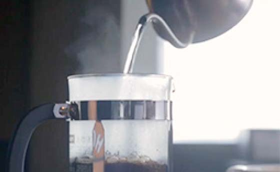
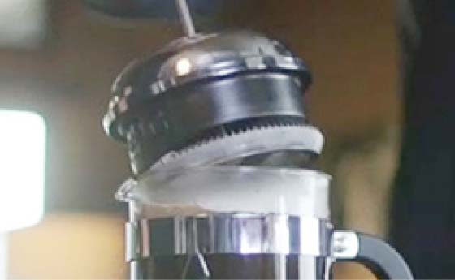

Кофе
С 1971 года Starbucks отбирает и обжаривает для вас самые лучшие сорта арабики в мире. Наша команда дегустаторов снимает пробу с 250 000 чашек кофе в год, чтобы удостовериться, что каждая чашка великолепна.
ПРИГОТОВЛЕНИЕ КОФЕ
Френч пресс
Приготовление кофе во френч-прессе сохраняет все ценные масла, поглощаемые бумажными фильтрами, и все оттенки вкуса кофе, делая его богатым и насыщенным.
- Смелите кофе и отмерьте нужное количество
Для френч-пресса используйте кофе крупного помола (размер частиц — как у морской соли) и кладите по 10 грамм кофе (две столовые ложки) на 180 мл воды.

СОВЕТ: Помните, что кофе в чем-то сродни фруктам и овощам: его следует покупать в небольших количествах и наслаждаться им, пока он свежий.
-
Добавьте горячей воды
Налейте только что вскипевшую воду во френч-пресс. Убедитесь, что весь кофе покрыт водой.
СОВЕТ: Для получения наилучшего вкуса используйте фильтрованную или бутилированную воду.
-
Вставьте поршень и оставьте кофе завариваться
Вставьте поршень во френч-пресс, но не опускайте его, а дайте кофе завариться в течение четырех минут.
 -
Опустите поршень и налейте кофе
Аккуратно опустите поршень до дна пресса и наслаждайтесь свежим кофе!

СОРТА КОФЕ
Обжарка BLONDE
Кофе Starbucks BLONDE имеет более короткое время обжарки, легкое тело и мягкий вкус.
История Starbucks началась с любви к правильно обжаренной арабике.
Сейчас гости Starbucks могут насладиться вкусом хорошего зернового кофе трех видов обжарки: Dark, Medium и Blonde.
Обжарка Blonde – это фирменная обжарка Starbucks, которая отличается менее продолжительным временем обжарки, легкостью тела и мягкостью вкуса.
Наша почти 50-летняя история поиска, обжарки и смешивания высококачественного кофе позволила нам создать идеально сбалансированный рецепт великолепного кофе легкой обжарки.
Кофе светлой обжарки обладает более мягким вкусом и является менее насыщенным вариантом.
Жемчужина коллекции Blonde Starbucks – бленд Starbucks Veranda.
Обжарка Blonde создана специально для ценителей богатого мягкого вкуса, которая отличается легкостью тела и мягкостью вкуса.
Обжарка MEDIUM
Обжарка MEDIUM отличается сбалансированным мягким и насыщенным ароматом.
Каждый сорт кофе требует разного времени и разной температуры обжарки во время обжарочного процесса для того, чтобы создать чашку кофе, содержащую в себе идеальное сочетание аромата, кислинки, насыщенности и вкуса.
Обжарка DARK
Искусство темной обжарки берет свое начало с 1971 года и выражает нашу неизменную страсть к насыщенному кофе.
Каждый сорт кофе требует разного времени и разной температуры обжарки, чтобы создать чашку кофе, содержащую идеальное сочетание аромата, кислинки, насыщенности и вкуса.
Кофе обжарки DARK характерен вкус от яркого сладкого до предымленного.